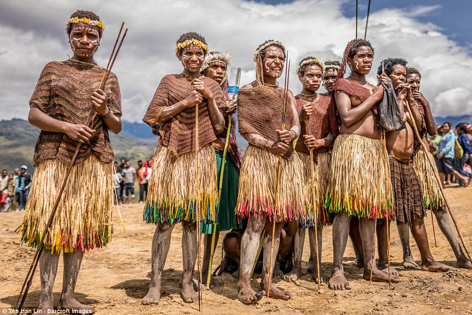

What is a tribe??
 Source: https://en.wikipedia.org/wiki/Tribe
In anthropology, a tribe is a human social group. Exact definitions of what constitutes a tribe vary among anthropologists, and the term is itself considered controversial
in academic circles in part due to its association with colonialism. In general use, the term may refer to people perceived by a population to be primitive and may have
negative connotations. The concept is often contrasted with other social groups concepts, such as nations, states, and forms of kinship.
In some places, such as India and North America, tribes are polities that have been granted legal recognition and limited autonomy by the national or federal government.
The word tribe first occurs in English in 12th-century Middle English-literature, in reference to the twelve tribes of Israel. The Middle English word is derived from Old French
tribu and, in turn, from Latin tribus (plural tribūs), in reference to a supposed tripartite division of the original Roman state along ethnic lines, into tribūs known as the Ramnes
(or Ramnenses), Tities (or Titienses), and Luceres, corresponding, according to Marcus Terentius Varro, to the Latins, Sabines and Etruscans respectively. The Ramnes were named after
Romulus, leader of the Latins, Tities after Titus Tatius, leader of the Sabines, and Luceres after Lucumo, leader of an Etruscan army that had assisted the Latins. In 242–240 BC,
the Tribal Assembly (comitia tributa) in the Roman Republic included 35 tribes (four "urban tribes" and 31 "rural tribes"). According to Livy, the three "tribes" were squadrons of cavalry,
rather than ethnic divisions.
The term's ultimate etymology is uncertain, perhaps from the Proto-Indo-European roots tri- ("three") and bhew ("to be"). The classicist Gregory Nagy says,[1] citing the linguist Émile
Benveniste,[2] that the Umbrian trifu (equivalent of the Latin tribus) is apparently derived from a combination of *tri- and *bhu-, where the second element is cognate with the Greek root
phúō φύω “to bring forth” and the Greek phulē φυλή "clan, race, people" (plural phylai φυλαί). The Greek polis ("state" or "city") was, like the Roman state, divided into three phylai.
In Europe during the late medieval era, the Bible was written mostly in New Latin and instead of tribus the word phyle was used, derived from the Greek phulē. In the historical sense,
"tribe", "race" and "clan" have often been used interchangeably.